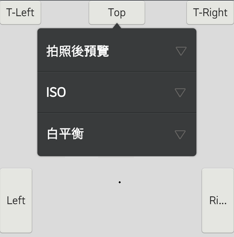

A popup arrowpanel that can be used to display ListWidget, ExpandableListWidget or other customized widgets for content. The popup arrowpanel is a floating container that appears on top of the current activity.

In this section, you can know how to use the PopupArrowPanel.
In PopupArrowPanel, the arrow indicator has four direction, include TOP, BOTTOM, RIGHT and LEFT. When create a PopupArrowPanel, should choose the direction to set up the arrow position.
You can implement custom provider for PopupArrowPanel use.
class MyListDarkProvider: public IListItemProvider {
public:
static const int32_t msImageWidgetId = 1;
static const int32_t msTextWidgetId = 2;
MyListDarkProvider(gaia::base::Vector<int32_t> pResSet,
gaia::base::Vector<gaia::base::String> pArraySet,
Page *pPage, Scene* pScene)
: mpResSet(pResSet), mpArraySet(pArraySet),
mplcparams1(NULL), mplcparams2(NULL), mpPage(pPage), mpScene(pScene) {
m2 = mpScene->getResources()->getDimensionPixelOffset(com::gaia::internal::R::dimen::margin_m);
mItemHeight = mpScene->getResources()->getDimensionPixelOffset(com::gaia::internal::R::dimen::list_item_height);
GLOG(LOG_TAG, LOGINFO, "MyListDarkProvider mItemHeight:%d", mItemHeight);
}
virtual ~MyListDarkProvider() {
Widget *pDeleted = NULL;
for (size_t i = 0; i < mWidgetPool.size(); i++) {
pDeleted = const_cast<Widget *>(mWidgetPool.itemAt(i));
delete pDeleted;
pDeleted = NULL;
}
gaia::ui::LinearControllerParams* params = NULL;
for (size_t i = 0; i < mParamsPool.size(); i++) {
params = mParamsPool.itemAt(i);
delete params;
params = NULL;
}
}
virtual int32_t getCount() const {
if (mpResSet.size() != 0) {
return static_cast<size_t>(mpResSet.size());
} else {
return 0;
}
}
virtual int64_t getItemId(int32_t position) const {
return position;
}
virtual gaia::core::Widget *createItemWidget(int32_t position) {
ImageWidget *pImg = new ImageWidget(mpPage);
pImg->setId(msImageWidgetId);
mplcparams1 = new LinearControllerParams(mItemHeight, mItemHeight);
mParamsPool.append(mplcparams1);
pImg->setControllerParams(mplcparams1);
mWidgetPool.append(pImg);
LinearController *pCtrl = new LinearController(mpPage);
pCtrl->setOrientation(LinearController::HORIZONTAL);
mWidgetPool.append(pCtrl);
mplcparams2 = new LinearControllerParams(LinearControllerParams::WRAP_CONTENT,
LinearControllerParams::WRAP_CONTENT);
mParamsPool.append(mplcparams2);
TextWidget *mpText = new TextWidget(mpPage);
GSAFETY_ON_NULL_RETURN_VAL(mpText, NULL);
mWidgetPool.append(mpText);
mpText->setId(msTextWidgetId);
mpText->setControllerParams(mplcparams2);
pCtrl->addWidget(pImg);
pCtrl->addWidget(mpText);
return pCtrl;
}
virtual int32_t getItemWidgetType(int32_t position) const {
return 0;
}
virtual gaia::core::Widget *getItemWidget(int32_t position,
gaia::core::Widget *pItemWidget, gaia::core::Widget *pParent) {
GSAFETY_ON_NULL_RETURN_VAL(pItemWidget, NULL);
LinearController *pCtrl = static_cast<LinearController *>(pItemWidget);
GSAFETY_ON_NULL_RETURN_VAL(pCtrl, NULL);
ImageWidget *pImg =
static_cast<ImageWidget *>(pCtrl->findWidgetById(msImageWidgetId));
GSAFETY_ON_NULL_RETURN_VAL(pImg, NULL);
pImg->setImageResource(mpResSet[position]);
pImg->setPadding(m2, m2, 0, m2);
TextWidget *pTitleText =
static_cast<TextWidget *>(pCtrl->findWidgetById(msTextWidgetId));
GSAFETY_ON_NULL_RETURN_VAL(pTitleText, NULL);
pTitleText->setText(mpArraySet[position]);
pTitleText->setPadding(m2, 0, m2, 0);
pTitleText->setTextAppearance(com::gaia::internal::R::style::list_primary_m_Bold);
pTitleText->setTextColor(Color::WHITE);
pTitleText->setSingleLine(true);
pTitleText->setMinHeight(mItemHeight);
pTitleText->setEllipsize(TextWidget::END);
pTitleText->setGravity(Gravity::CENTER);
return pItemWidget;
}
virtual int32_t getWidgetTypeCount() const {
return 1;
}
virtual bool hasStableIds() const {
return true;
}
virtual bool isEmpty() const {
return mpResSet.size() == 0;
}
virtual bool areAllItemsEnabled() const {
return true;
}
virtual bool isEnabled(int32_t position) const {
return true;
}
private:
int32_t m2, mItemHeight;
gaia::base::Vector mpResSet;
gaia::base::Vector mpArraySet;
gaia::base::Vector mWidgetPool;
gaia::base::Vector mParamsPool;
gaia::ui::LinearControllerParams mplcparams1;
gaia::ui::LinearControllerParams mplcparams2;
Page mpPage;
Scene mpScene;
};
int32_t PopupMenuDemoTest::msImgSet[CNT_RES] = {
R::drawable::gingerdroid,
R::drawable::ics,
R::drawable::froyo,
R::drawable::cher,
R::drawable::peter};
void PopupMenuDemoTest::onInit(Persistence const p) {
mpUIScene = Scene::SceneFactory(static_cast(this));
GSAFETY_ON_NULL_RETURN(mpUIScene);
Vector<gaia::base::String> mContentarray;
mContentarray.append("停止");
mContentarray.append("資料夾");
mContentarray.append("新增會議邀請");
mContentarray.append("排序");
mContentarray.append("篩選");
// =====================================================
// Default customized provider for PopupArrowPanel
for (int32_t i = 0 ; i < CNT_RES; i++) {
msImgVector.append(msImgSet[i]);
}
mpProvider = new MyListDarkProvider(msImgVector, mContentarray , this, mpUIScene);
// =====================================================
// 1. Create the PopupArrowPanel and default is ListWidget mode.
PopupArrowPanel* mpListPopup = new PopupArrowPanel(this);
// 2. set the arrow indicator position.
mpListPopup->setIndicatorPosition(PopupArrowPanel::BOTTOM);
// 3. set the size of panel.
mpListPopup->setSize(PopupArrowPanel::MINWIDTH, ControllerParams::WRAP_CONTENT);
// 4. set the content of panel
mpListPopup->setListProvider(mpProvider);
}
void PopupMenuDemoTest::onClick(Widget* v) {
GLOGENTRY(LOG_TAG);
GSAFETY_ON_NULL_RETURN(v);
switch (v->getId()) {
case 1: // BOTTOM center
{
if (mpListPopup->isShowing()) {
// Close PopupArrowPanel
mpListPopup->dismiss();
} else {
// Show PopupArrowPanel
mpListPopup->showAsDropDown(v, 0, 0);
}
}
break;
}
}
If your content just have some string array, then you don't need to create a ListProvider, you can use setItemList() API to set up the content of PopupArrowPanel.
void PopupMenuDemoTest::onInit(Persistence const p) {
// =====================================================
// Default array for PopupArrowPanel
gaia::base::StringArray instringArray(4);
instringArray.replaceAt("Stop", 0);
instringArray.replaceAt("Folder", 1);
instringArray.replaceAt("Sort", 2);
instringArray.replaceAt("Filters", 3)
// =====================================================
// 1. Create the PopupArrowPanel and default is ListWidget mode.
PopupArrowPanel* mpListPopup = new PopupArrowPanel(this);
// 2. set the arrow indicator position.
mpListPopup->setIndicatorPosition(PopupArrowPanel::BOTTOM);
// 3. set the size of panel.
mpListPopup->setSize(PopupArrowPanel::MINWIDTH, ControllerParams::WRAP_CONTENT);
// 4. set the array content into panel.
mpListPopup->setItemList(instringArray);
}
class MyPopupExpandableProvider: public IExpandableListProvider {
public:
static const int32_t msGroupTextWidgetId = 1;
static const int32_t msChildTextWidgetId = 2;
explicit MyPopupExpandableProvider(Page *pPage)
: mpPage(pPage) {
Scene* pScene = pPage->getSceneSingleton();
Resources* pRes = pScene->getResources();
m2 = pRes->getDimensionPixelOffset(com::gaia::internal::R::dimen::margin_m);
mItemHeight = pRes->getDimensionPixelOffset(com::gaia::internal::R::dimen::list_item_height);
mExpandColor = pRes->getColor(com::gaia::internal::R::color::dark_expand_list_color);
instringArray.append("拍照後預覽");
instringArray.append("ISO");
instringArray.append("白平衡");
mChildArray1.append("無限制");
mChildArray1.append("3秒");
mChildArray1.append("5秒");
mChildArray2.append("自動");
mChildArray2.append("100");
mChildArray2.append("200");
mChildArray3.append("自動");
mChildArray3.append("鎢絲燈");
mChildArray3.append("螢光燈");
}
virtual ~MyPopupExpandableProvider() {
Widget *pDeleted = NULL;
for (size_t i = 0; i < mWidgetPool.size(); i++) {
pDeleted = const_cast(mWidgetPool.itemAt(i));
delete pDeleted;
}
}
virtual void onGroupExpanded(int32_t groupPosition) {
}
virtual void onGroupCollapsed(int32_t groupPosition) {
}
virtual int32_t getGroupCount() {
return 3;
}
virtual int32_t getChildrenCount(int32_t groupPosition) {
return 3;
}
virtual bool hasStableIds() {
return true;
}
virtual bool isChildSelectable(int32_t groupPosition,
int32_t childPosition) {
return true;
}
virtual bool areAllItemsEnabled() {
return true;
}
virtual bool isEmpty() {
return false;
}
virtual int64_t getGroupId(int32_t groupPosition) {
return groupPosition;
}
virtual int64_t getChildId(int32_t groupPosition,
int32_t childPosition) {
return childPosition;
}
virtual int64_t
getCombinedChildId(int64_t groupId, int64_t childId) {
return 0;
}
virtual int64_t getCombinedGroupId(int64_t longgroupId) {
return 0;
}
virtual gaia::core::Widget *createGroupItemWidget(
int32_t groupPosition) {
GLOGENTRY(LOG_TAG);
TextWidget *mpText = new TextWidget(mpPage);
mpText->setId(msGroupTextWidgetId);
return mpText;
}
virtual gaia::core::Widget *getGroupItemWidget(int32_t groupPosition,
bool isExpanded,
gaia::core::Widget *convertView,
gaia::core::Widget *parent) {
GLOGENTRY(LOG_TAG);
TextWidget *pTitleText =
static_cast(convertView);
pTitleText->setText(instringArray[groupPosition]);
pTitleText->setPadding(m2, 0, m2, 0);
pTitleText->setTextAppearance(com::gaia::internal::R::style::list_primary_m_Dark_Bold);
pTitleText->setTextColor(Color::WHITE);
pTitleText->setSingleLine(true);
pTitleText->setMinHeight(mItemHeight);
pTitleText->setEllipsize(TextWidget::END);
pTitleText->setGravity(Gravity::CENTER_VERTICAL);
return pTitleText;
}
virtual gaia::core::Widget *createChildItemWidget(int32_t groupPosition,
int32_t childPosition) {
GLOGENTRY(LOG_TAG);
TextWidget* mpLabel = new TextWidget(mpPage);
mpLabel->setId(msChildTextWidgetId);
return mpLabel;
}
virtual gaia::core::Widget *getChildItemWidget(int32_t groupPosition,
int32_t childPosition, bool isLastChild,
gaia::core::Widget *convertWidget,
gaia::core::Widget *parent) {
GLOGENTRY(LOG_TAG);
TextWidget *pTitleText =
static_cast(convertWidget);
if (groupPosition == 0) {
pTitleText->setText(mChildArray1[childPosition]);
} else if (groupPosition == 1) {
pTitleText->setText(mChildArray2[childPosition]);
} else {
pTitleText->setText(mChildArray3[childPosition]);
}
pTitleText->setPadding(m2, 0, m2, 0);
pTitleText->setTextAppearance(com::gaia::internal::R::style::list_primary_m_Dark_Bold);
pTitleText->setTextColor(Color::WHITE);
pTitleText->setBackgroundColor(mExpandColor);
pTitleText->setSingleLine(true);
pTitleText->setMinHeight(mItemHeight);
pTitleText->setEllipsize(TextWidget::END);
pTitleText->setGravity(Gravity::CENTER_VERTICAL);
return pTitleText;
}
private:
gaia::base::Vector mWidgetPool;
Page *mpPage;
int32_t m2;
int32_t mItemHeight;
int32_t mExpandColor;
gaia::base::Vector instringArray;
gaia::base::Vector mChildArray1;
gaia::base::Vector mChildArray2;
gaia::base::Vector mChildArray3;
};
void PopupMenuDemoTest::onInit(Persistence const p) {
mpUIScene = Scene::SceneFactory(static_cast(this));
// =====================================================
// Default customized provider for PopupArrowPanel
mpExpnadProvider = new MyPopupExpandableProvider(this);
// =====================================================
// 1. Create the PopupArrowPanel and set up the ExpandableListPopup mode.
PopupArrowPanel* mpListPopup = new PopupArrowPanel(this, PopupArrowPanel::EXPANDLISTPOPUP);
// 2. set the arrow indicator position.
mpListPopup->setIndicatorPosition(PopupArrowPanel::BOTTOM);
// 3. set the size of panel.
mpListPopup->setSize(PopupArrowPanel::MINWIDTH, ControllerParams::WRAP_CONTENT);
// 4. set the content of panel
mpListPopup->setExpandableListProvider(mpExpnadProvider);
}
void PopupMenuDemoTest::onClick(Widget* v) {
GLOGENTRY(LOG_TAG);
switch (v->getId()) {
case 1: // BOTTOM center
{
if (mpListPopup->isShowing()) {
// Close PopupArrowPanel
mpListPopup->dismiss();
} else {
// Show PopupArrowPanel
mpListPopup->showAsDropDown(v, 0, 0);
}
}
break;
}
}
void PopupMenuDemoTest::onInit(Persistence const p) {
mpUIScene = Scene::SceneFactory(static_cast(this));
// =====================================================
// Create Customized Widget
mpLCtrl = new LinearController(this);
mpLCtrl->setOrientation(LinearController::VERTICAL);
mplcp1 = new LinearControllerParams(
ControllerParams::WRAP_CONTENT, ControllerParams::WRAP_CONTENT);
mpLCtrl->setPadding(80, 20, 80, 0);
TextWidget* mpText = new TextWidget(this);
mpText->setTextColor(Color::WHITE);
mpText->setText(String("Customized Widget Sample"));
Button* mpBtn = new Button(static_cast(this));
mpBtn->setText("This is Button");
SeekBar* mpSeekBar = new SeekBar(static_cast(this));
mpSeekBar->setMax(99);
mpSeekBar->setPadding(0, 20, 0, 0);
ImageWidget* mpImageWidget = new ImageWidget(this);
mpImageWidget->setImageResource(R::drawable::a01);
mpLCtrl->addWidget(mpText);
mpLCtrl->addWidget(mpBtn);
mpLCtrl->addWidget(mpSeekBar);
mpLCtrl->addWidget(mpImageWidget);
// =====================================================
// If You want to use the customized widget in PopupArrowPanel, should assign the height,
// the height will not support the WRAP_CONTENT and MATCH_PARENT.
// 1. Create the PopupArrowPanel
PopupArrowPanel* mpListPopup = new PopupArrowPanel(this);
// 2. set the arrow indicator position.
mpListPopup->setIndicatorPosition(PopupArrowPanel::BOTTOM);
// 3. set the size of panel.
mpListPopup->setSize(PopupArrowPanel::MINWIDTH, 650);
// 4. set the content of panel.
mpLeftPopup->setCustomizedWidget(*mpLCtrl);
}
// Dispose of the PopupArrowPanel.
void dismiss();
// Change the popup's width and height, either WRAP_CONTENT, MATCH_PARENT,
// or a fixed size in pixels
void setSize(int32_t width, int32_t height);
// Change the background drawer for this PopupArrowPanel.
void setBackgroundDrawer(gaia::graphics::Drawer* background);
// Display the content widget in a PopupArrowPanel anchored to the bottom-left
// corner of the anchor widget.
void showAsDropDown(gaia::core::Widget* anchor, int32_t xoff, int32_t yoff);
// Indicate whether this PopupArrowPanel is showing on screen.
bool isShowing();
// Sets the listener to be called when the PopupArrowPanel is dismissed.
void setOnDismissListener(gaia::ui::IOnDismissListener* onDismissListener);
// Change the arrow indicator position in PopupArrowPanel.
void setIndicatorPosition(int32_t direction);
// Get the arrow indicator position.
int32_t getIndicatorPosition();
// Change the arrow x location offset.
void setArrowXMarginOffset(int32_t xoffset);
// Change the arrow y location offset.
void setArrowYMarginOffset(int32_t yoffset);
// Set the StringArray to show what you want to show.
void setItemList(const gaia::base::StringArray& strarray);
// Register a callback to be invoked when an item in this provider has
// been clicked.
void setOnItemClickListener(ListWidgetOnItemClickListener *pListener);
// Register a callback to be invoked when an item in this provider has
// been clicked and held
void setOnItemLongClickListener(ListWidgetOnItemLongClickListener *pListener);
// Set the list widget provider
void setListProvider(gaia::ui::IListItemProvider *pProvider);
// Set the expandable list widget provider
void setExpandableListProvider(gaia::ui::IExpandableListProvider *pProvider);
// Set the customized widget into PopupArrowPanel.
void setCustomizedWidget(const gaia::core::Widget& widget);
// Get the List provider.
gaia::ui::IListItemProvider* getListProvider();